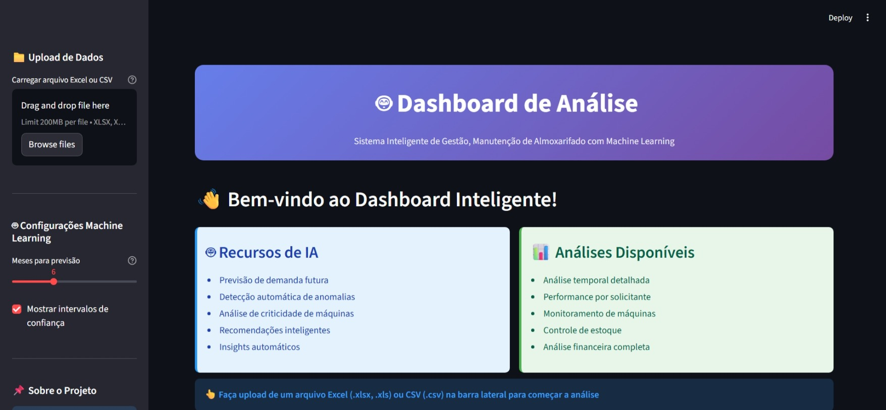

Plataforma de Gestión Financiera y Controladuría (Sankhya ERP)
Aplicación estilo SPA construida vía HTML/JS dentro del ERP. Realiza ingeniería inversa en Oracle para
reconstruir saldos bancarios, calcular el PMP y segmentar la morosidad en tiempo real.

Monitoreo de Gestión Industrial (Open-End & Cards)
Dashboard de alto rendimiento integrado vía JDBC Oracle para la planta de fábrica. Control de
eficiencia, velocidad (RPM) y rupturas a través de filtros de contexto globales.
- Operación Industrial Privada

Inteligencia de Inventario y Flujo de Caja
Panel con fuerte lógica de consolidación en la base de datos para analizar valores, distribución,
obsolescencia y rotación (Consumo vs. Entrada).

Dashboard de Almacén con Machine Learning
Sistema inteligente desarrollado para análisis predictivo y gestión estratégica de almacenes
industriales.
Utiliza técnicas avanzadas de Machine Learning para predecir demandas, detectar
anomalías
y optimizar procesos de mantenimiento. El dashboard ofrece interfaz interactiva con
Streamlit, soportando archivos Excel y CSV.
- Herramientas: Python, Streamlit, Scikit-learn, Prophet, Plotly, Pandas
- Modelos ML: Regresión Lineal, Random Forest, Gradient Boosting, Prophet (Meta)
- Funcionalidades: Previsiones 3-12 meses, detección de anomalías, análisis de
criticidad, control financiero
- Destaque: Patch para NumPy 2.0+, validación automática de datos, gráficos
interactivos ordenados cronológicamente

Análisis Cohorte – SuperStore
Utilizando Excel, desarrollé un análisis de retención de clientes (Cohort Analysis) con datos reales
de una cadena nacional de supermercados. A partir de la limpieza y estructuración de datos,
identifiqué los mejores grupos de adquisición y patrones de comportamiento, generando insights
estratégicos para retención y ventas.
- Herramientas: Excel, BUSCARV, Tablas Dinámicas, Formato Condicional
- Resultado: La cohorte de mayo/2014 tuvo la mejor retención después de 6 meses
(11%)
- Insight clave: Las campañas promocionales impactan positivamente en la recompra

Análisis RFM – Segmentación de Clientes
Clasifiqué a los clientes según su comportamiento de compra utilizando la técnica RFM
(Recencia, Frecuencia y Valor Monetario). Este análisis permite segmentar la base de clientes
para crear campañas personalizadas y maximizar el retorno de inversión en marketing.
- Herramientas: Excel (ÍNDICE, COINCIDIR, SUMAR.SI, PERCENTIL)
- Segmentos creados: Campeones, Leales, Prometedores, Perdidos y más
- Resultados: 40% de los clientes son potencialmente leales; solo 1% está en “No
Perder”

DataLuz – Plataforma SaaS para E-commerce
Desarrollé una solución digital ficticia para pequeños y medianos e-commerce que enfrentan dificultades
con el análisis de datos. DataLuz ofrece dashboards intuitivos, alertas automáticas vía
WhatsApp e informes personalizados. El proyecto forma parte del curso de la Comunidad DS e incluye la
creación completa de un modelo de negocio digital con estrategias AARRR.
- Herramientas: Estrategia de Producto, Métricas AARRR, Viaje del Cliente
- Problema: Falta de tiempo y conocimiento técnico para Business Intelligence
- Solución: Integración vía API, informes automatizados y visualización simplificada
- Destaque: Envío de insights directamente al WhatsApp del emprendedor

Predicción de Fidelidad con IA – Clasificación de Clientes
En este proyecto desarrollé un modelo de Machine Learning utilizando Árbol de
Decisión para predecir la probabilidad de que los clientes se adhieran a programas de
fidelización (Aurora, Nova y Star). La interfaz fue construida con Gradio, permitiendo
que cualquier persona simule la clasificación de un nuevo cliente de forma intuitiva. Ideal para
marketing y retención.
- Herramientas: Python, Pandas, Scikit-Learn, Gradio, Matplotlib
- Problema: Las empresas no sabían predecir la adhesión a los programas de
fidelización
- Solución: Clasificación con árbol de decisión + interfaz interactiva en Gradio
- Destaque: Proyecto con despliegue interactivo y visualización del árbol en tiempo
real

Simulación Jurídica con Datos Sintéticos para Data Science
Desarrollé un generador de datos jurídicos sintéticos y realistas, creando un dataset completo con
2.000 procesos, partes involucradas y movimientos procesales. Esta solución es ideal para demostrar
habilidades en análisis de datos, BI y modelado predictivo en un escenario que simula el mundo legal
real.
- Herramientas: Python, Pandas, Faker
- Problema: Dificultad para acceder a datos jurídicos detallados debido a la
confidencialidad
- Solución: Script que genera un dataset robusto y verosímil en formato .csv, listo
para usar en Power BI, Excel o Python
- Destaque: Capacidad de simular un entorno complejo, con valores de causa,
provisiones de riesgo, fases procesales y abogados responsables

Análisis de Alojamiento y Precios – Airbnb NYC
Proyecto completo de análisis de datos utilizando un gran conjunto de datos de Airbnb en Nueva York. El
objetivo fue transformar miles de registros en insights estratégicos sobre alojamiento, precios y
patrones de localización mediante un dashboard dinámico e intuitivo en Power BI.
- Herramientas: Power BI, Power Query, DAX
- Destaques: Gráfico de Pareto (Top 100 barrios), mapa geográfico, análisis temporal
e indicadores de rendimiento (KPIs)
- Insight clave: Identificación de barrios con alta concentración de alojamientos
premium y patrones de precios por temporada